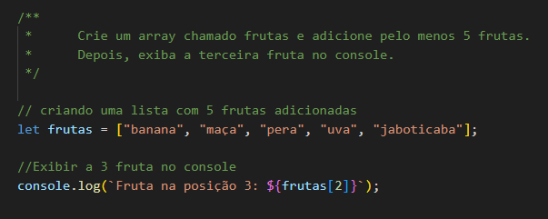
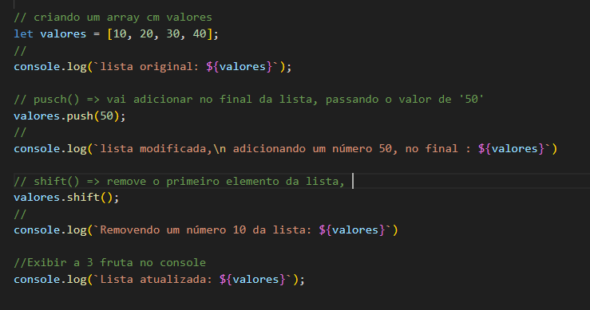
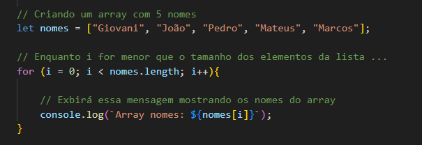
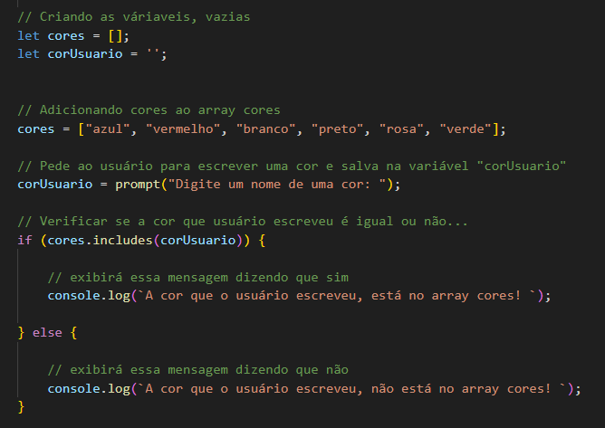
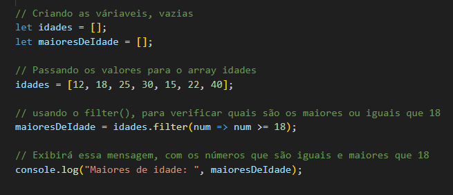
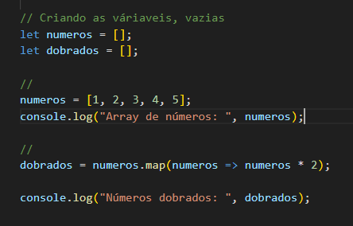
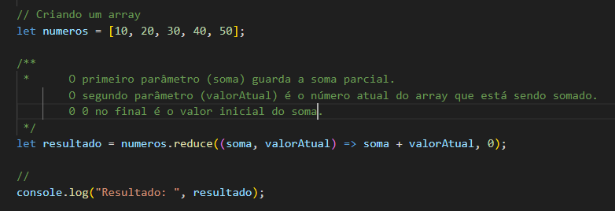
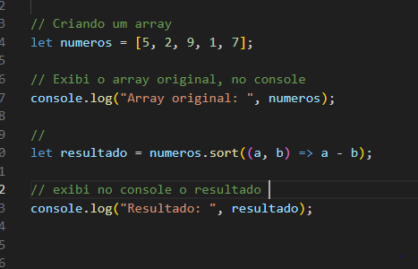
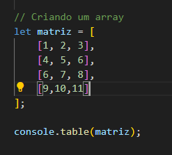

Crie um array chamado frutas e adicione pelo menos 5 frutas.
Depois, exiba a terceira fruta no console.

🔹 2. Adicionando e Removendo Elementos
Crie um array chamado numeros contendo os valores [10, 20, 30, 40].
Adicione o número 50 no final do array.
Remova o primeiro número do array.
Exiba o array atualizado no console.

🔹 3. Percorrendo um Array com for
Crie um array chamado nomes com 5 nomes.
Depois, use um laço for para imprimir todos os nomes um por um.

🔹 4. Encontrando um Elemento
Crie um array chamado cores com 5 cores.
Depois, pergunte ao usuário uma cor e verifique se ela está no array.

🔹 5. Filtrando Elementos do Array
Crie um array chamado idades com [12, 18, 25, 30, 15, 22, 40].
Depois, crie um novo array chamado maioresDeIdade que
contenha apenas as idades maiores ou iguais a 18.

🔹 6. Multiplicando Elementos do Array
Crie um array chamado numeros com [1, 2, 3, 4, 5].
Depois, crie um novo array chamado dobrados
onde cada número seja multiplicado por 2.

🔹 7. Somando os Elementos do Array
Crie um array com os números [10, 20, 30, 40, 50] e calcule a soma de todos os valores.

🔹 8. Ordenando um Array
Crie um array com [5, 2, 9, 1, 7] e ordene os números em ordem crescente.

🔹 9. Matriz 3x3 (Array Multidimensional)
Crie uma matriz 3x3 (array dentro de array) e imprima todos os valores em formato de tabela.

🔹 10. Desafio Final: Interação com o Usuário
Crie um programa que peça 5 números ao usuário e os armazene em um array.
Depois, exiba:
✅ Os números digitados.
✅ O maior número.
✅ O menor número.
💡 Dica: Use Math.max(...array) e Math.min(...array).